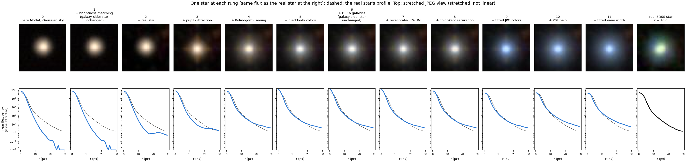
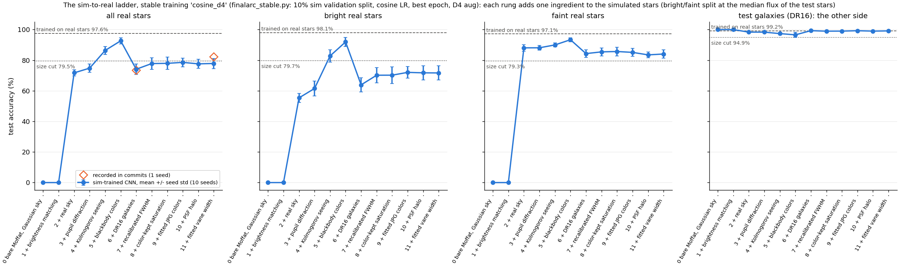
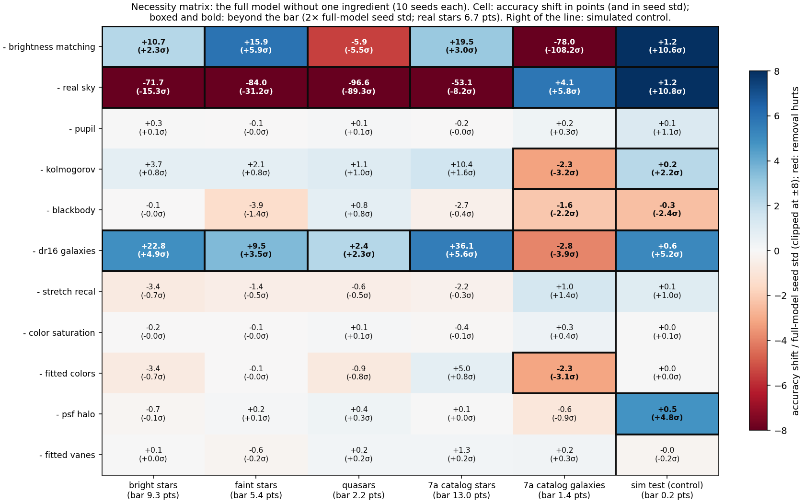
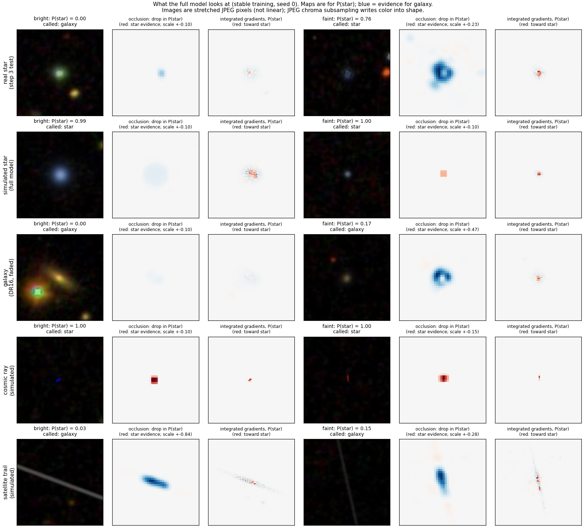
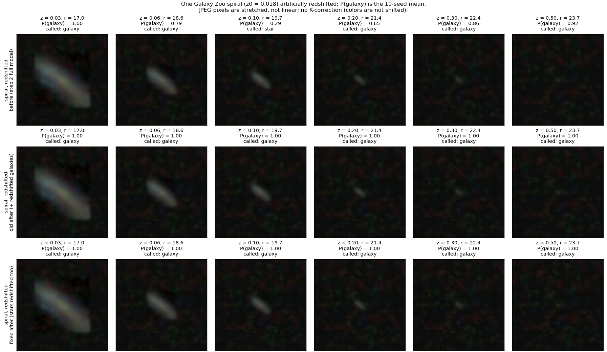
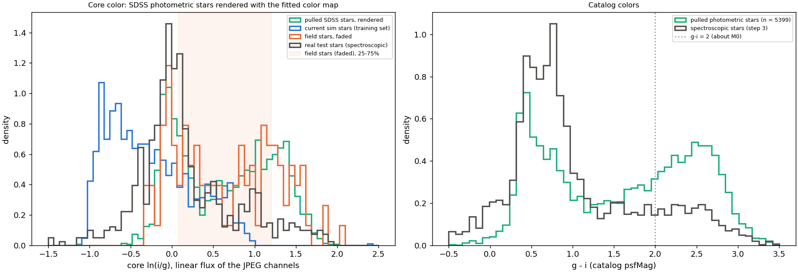
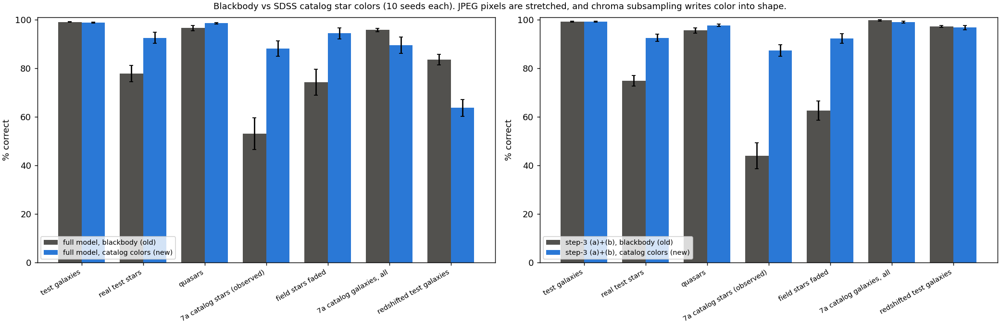
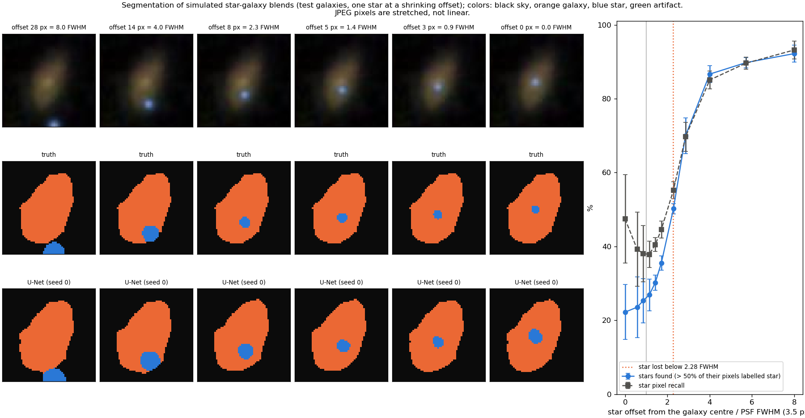

What must a simulated sky contain?
A CNN learns to tell stars from galaxies using simulated stars injected into real SDSS sky, then gets tested on real stars it has never seen. The question is which parts of the simulation actually make that work. The answer turned out to be different from what we built for.
Real-star accuracy, mean of 10 training seeds. On stars found in real SDSS fields, the share called "star" rose from 44% to 87%.
The ladder: adding ingredients one at a time


The removal test: which ingredients are needed?
Start from the full model and take out one ingredient at a time, 10 seeds each. The bar was set before any of these runs: an ingredient counts as necessary only if removing it moves real-star accuracy by more than 6.7 points, twice the seed-to-seed scatter.

What the network looks at

The missing galaxies: artificial redshifting
Every training galaxy was a large, bright Galaxy Zoo galaxy. On real fields an earlier five-class classifier called only 1% of catalog galaxies at r = 20–21 "galaxy": to it, small and faint meant star. The fix is to move each galaxy to a higher redshift: shrink it by the ratio of angular-diameter distances, dim it as (1+z)⁴, add the PSF blur the shrunk image is missing, and put the sky noise back.

The real missing ingredient: star colors
Stars found in real SDSS fields were still called "star" only about half the time. Brightness and saturation explained only part of it, and a JPEG artifact test came back negative. The clearest difference was color: at matched flux, field-star cores are far redder than the test stars' (ln(i/g) of 1.13 against 0.06). The simulated stars drew their colors from blackbodies between 3000 and 12000 K, and real field stars are much redder than that.


Several objects per image


How it started: building the telescope
Before the final arc, each ingredient went in because of a specific failure or check. The removal test above later showed which of them the classifier actually needs.


Along the way


Coming
An anomaly hunt: every detection in 300 real SDSS fields ranked by how unfamiliar it looks to the network, and a gallery of the strangest things it finds.